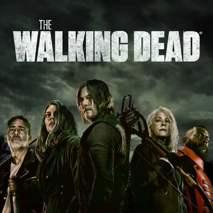

<!DOCTYPE html>
<html>
<head>
<title></title>
</head>
<body>

</body>
</html>

<center>
    <font size="10" color="#E8BEEE" >The walking dead</font>
    <br><br><br>
   
    <th></th> </center>

    The Walking Dead ir amerikāņu postapokaliptisks šausmu televīzijas seriāls, kura pamatā irRoberta Kērkmena , Tonija Mūra un Čārlija Adlarda tāda paša nosaukuma komiksu sērijas, kas kopā veido The Walking Dead franšīzes kodolu . Sērijā ir liels ansamblis, kas spēlē zombiju apokalipses izdzīvotājusmēģina palikt dzīvs, gandrīz pastāvīgi draudot uzbrukt no zombijiem, kas pazīstami kā "staigātāji" (citu segvārdu starpā). Līdz ar mūsdienu civilizācijas sabrukumu šiem izdzīvojušajiem ir jāsastopas ar citiem izdzīvojušajiem cilvēkiem, kuri ir izveidojuši grupas un kopienas ar saviem likumu un morāles kopumiem, dažkārt izraisot atklātu, naidīgu konfliktu starp viņiem.